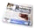

Icònas utilizadas dins l'OPAC
Icònes qu'indican los periodics : article
article-  periodic
 tèxt imprimit
tèxt imprimit tèxt manuscrich
tèxt manuscrich particion musicala imprimida
particion musicala imprimida particion musicala manuscricha
particion musicala manuscricha document cartografic imprimit
document cartografic imprimit document cartografic manuscrich
document cartografic manuscrich document projectat o vidèo
document projectat o vidèo enregistrament sonòr non musical
enregistrament sonòr non musical- enregistrament sonòr musical
 document grafic de doas dimensions
document grafic de doas dimensions document electronic
document electronic document multimèdia
document multimèdia objècte de 3 dimensions, artefactes, ...
objècte de 3 dimensions, artefactes, ...
Las monografias son representadas sonque per l'icòna de lor mena de supòrt.
Exemple :